Chapter 4 Graphics with ggplot2
4.1 Welcome to ggplot
Graphs play an important part of any data analysis in understanding your data.
As we’ve mentioned in the previous chapter, base-R can be extended using packages and the particular package we’ll be using in this tutorial will be ggplot2 (Wickham, Chang, et al. 2019).
There are lots of of different systems for producing graphs in R. We are going to focus on the ggplot2 package. The syntax can look scary at first, but once you understand the basic building blocks, you will be able to produce complex graphs very easily.
Comparing base-R with ggplot2
baseR
- Simple intuitive syntax for basic plot
- Pretty ugly basic plot
- Inconsistent syntax for different plot types
- Complicated syntax for customisation
ggplot2
- Unusual syntax for basic plot
- Pretty looking basic plot
- Consistent syntax for different plot types
- Consistent syntax for customisation
1 against 3. ggplot2 wins.
4.2 Setting up
Assuming you have followed the previous chapter, particularly from 2.1.1, at this stage you have installed R, RStudio, familarised yourself with the key panels and then installed key packages including ggplot2.
This means you simply need to load ggplot2 into your current session by simply running the command below.
library(ggplot2)To plot our data, we first need data. Luckily we have some prepared for you.
The simpliest way for this tutorial is to look at the Environment panel in the top right of RStudio and press the folder with the green arrow. Navigate to the Data folder you downloaded from GitHub (Link Here). Double click on 03 Pulse.RData. In a later chapter, we will talk about how to import other formats.
4.3 Description of the “Pulse of the Nation” Dataset
Before we proceed with any analysis, and even outside this tutorial, it is important to understand your dataset.
You can view the dataset in RStudio by single clicking the name in the Environment tab.
The “Pulse” dataset is an extract from the monthly survey “Pulse of the Nation” made by Cards Against Humanity (Cards Against Humanity 2018) which contains a representative sample of US citizens.The dataset contains an extract of 356 repsonses to 10 of the survey questions:
| Variable | Question |
|---|---|
| Gender | What gender do you identify with? |
| Age | What is your age? |
| AgeGrp | Age range |
| Race | What is your race? |
| Income | About how much money do you make per year? (USD) |
| Education | What is your highest level of education? |
| PoliticalParty | In politics today do you consider yourself a Democrat a Republican or Independent? |
| PoliticalView | Would you say you are liberal conservative or moderate? |
| ApproveTrump | Do you approve disapprove or neither approve nor disapprove of how Donald Trump is handling his job as president? |
| Attractiveness | On a scale of 1-10 how physically attractive are you? |
4.4 Main components of ggplot2
To build a plot in ggplot2, you have to specify features of the plot. The two essential ones are;
Aesthetics -
aes()- describes which variables in our dataset are going to be mapped to what components of our plotGeometries -
geom_****()- describes how the variables will be plotted
The other types of features are; Scales, Themes, Facets which will be introduced throughout this tutorial.
4.5 First ggplot2 graph
Here is how you produce a scatter plot of perceived attractiveness against age
ggplot(data = Pulse, aes(x = Attractiveness, y = Income)) +
geom_point()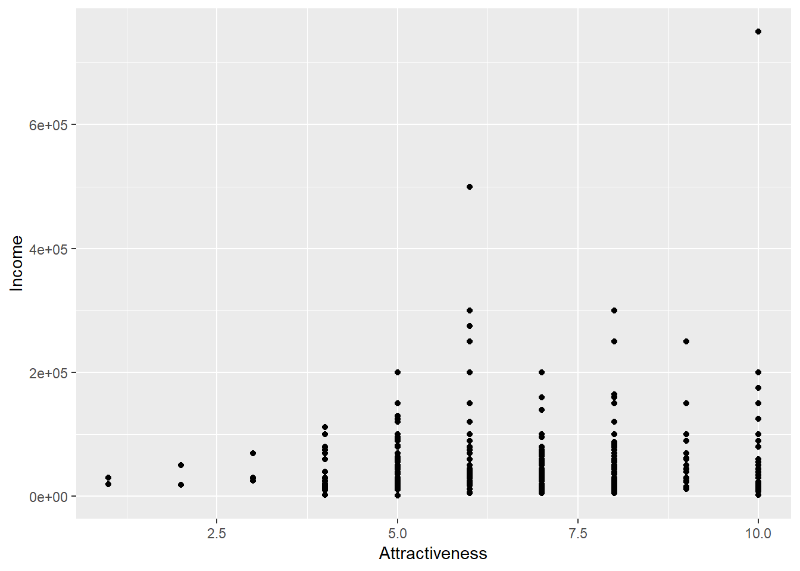
Before we break down this example, it is perhaps worth noting the notation used on the y axis. It is how computers show scientific notation where 2e+05 \(= 2 \times 10^5\).
Now let’s look at the different parts of the commands.
With ggplot2, you always begin a graph with the function ggplot(), which creates the base layer and sets the default for each plot but it is blank until we add some layers - “geoms” - to it.
The aes argument defines which variables you want to use for which purpose. ‘aes’ is short for aesthetics. So ggplot(data = Pulse, aes(x = Attractiveness, y = Income)) defines the data and the variables to be plotted on the x-axis and the y-axis.
ggplot(data = Pulse, aes(x = Attractiveness, y = Income))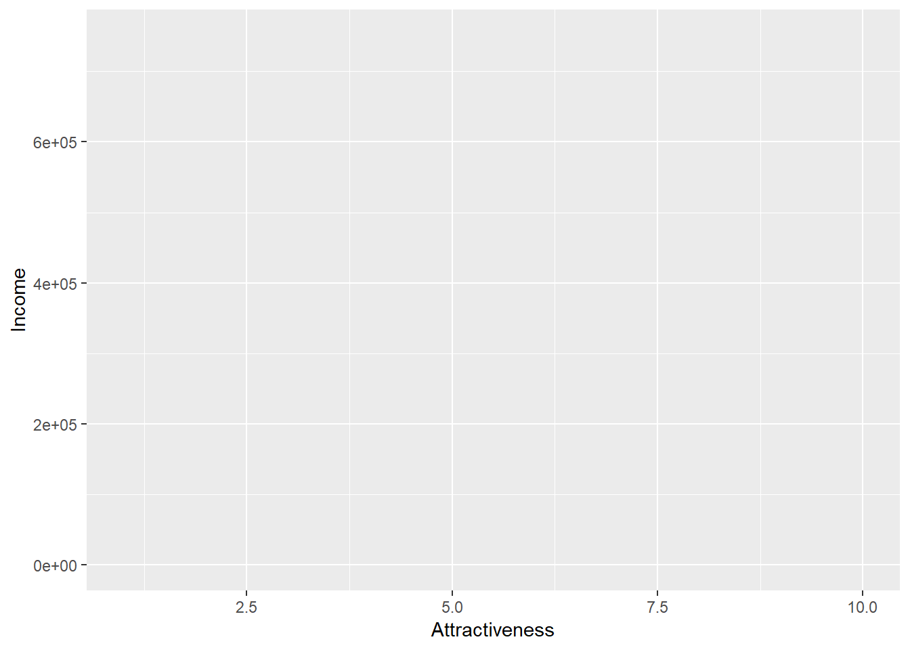
As you can see - not a very informative graph!
You complete your graph by adding one or more layers to ggplot(). There are many different types of layers you can use to create your graph and they all start with geom_????. For example, the function geom_line() adds a layer of a line to your plot.
ggplot(data = Pulse, aes(x = Attractiveness, y = Income)) +
geom_point()
QUESTION: Modify the same command to instead plot a scatter plot of age on the x axis against income on the y axis
4.6 Adding colour
We can modify the appearance of our points in one of 2 ways - either we can map a variable of our data to an aesthetic or we can permanently apply a style characteristic across all points. To make all the points purple we can add colour=“purple” into the geom_point() part of the syntax.
ggplot(data = Pulse, aes(x = Attractiveness, y = Income)) +
geom_point(colour="purple")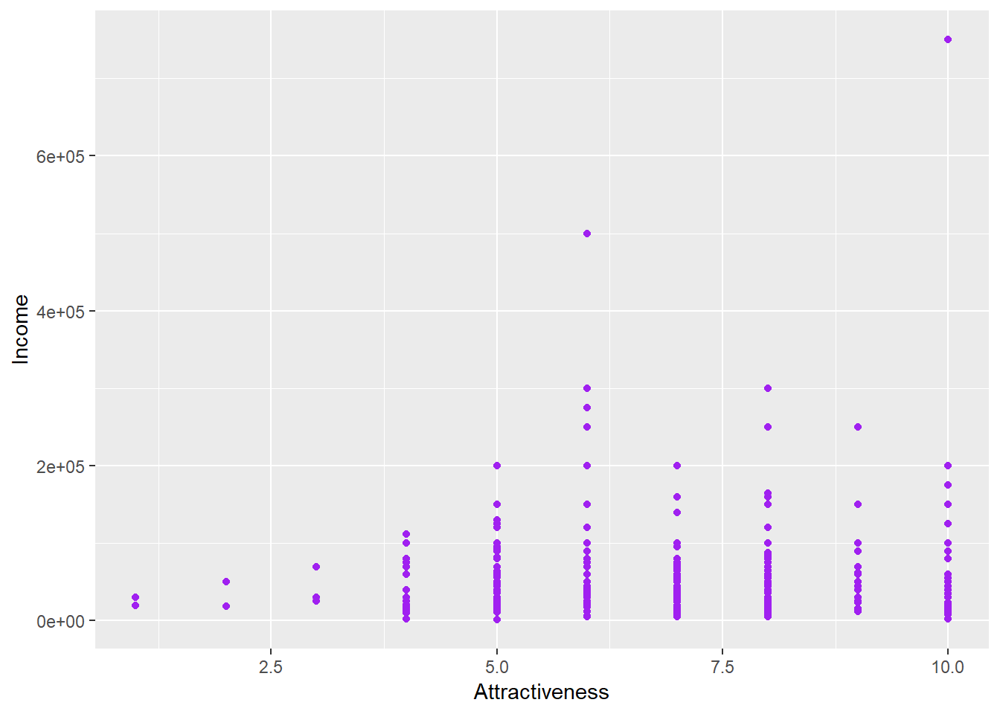
To set the points to be different colours based on the column ‘Gender’ then we can map gender to the colour aesthetic:
ggplot(data = Pulse, aes(x = Attractiveness, y = Income, colour=Gender)) +
geom_point()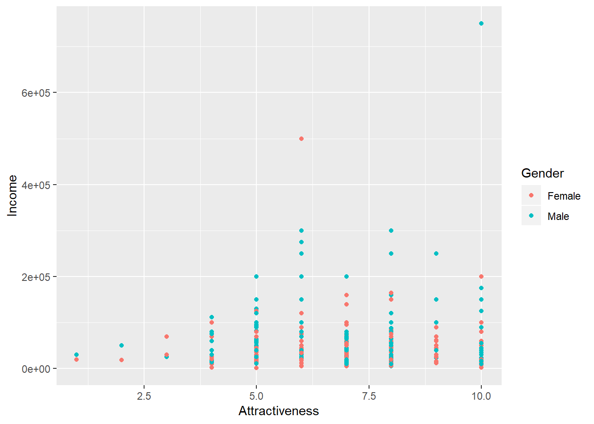
QUESTION: Before pressing run - predict what will happen in the following two chunks of code. After running - can you explain why?
A
ggplot(data = Pulse, aes(x = Attractiveness, y = Income, colour="purple")) +
geom_point()B
ggplot(data = Pulse, aes(x = Attractiveness, y = Income)) +
geom_point(colour=Gender)4.7 More Geoms
Let’s go back to attractiveness. If instead we wanted a line plot we can simply replace geom_point() with geom_line().
ggplot(data = Pulse, aes(x = Attractiveness, y = Income)) +
geom_line()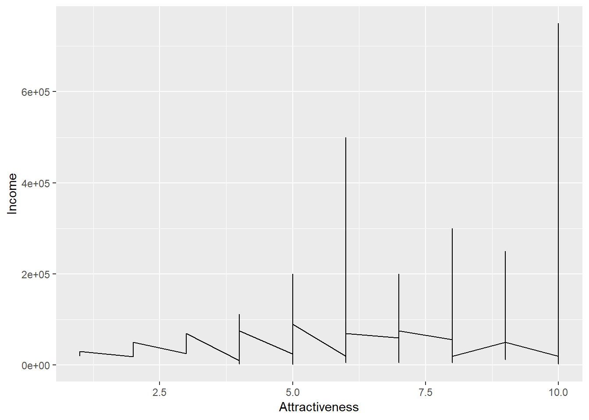
This graph is not particularly helpful in conveying any useful information about our data. Just because something is possible, does not mean it is advisable.
A geom that may be more useful is geom_jitter() - which would help us here because the attractiveness variable has a restricted set of values, so many points are being overlayed
ggplot(data = Pulse, aes(x = Attractiveness, y = Income)) +
geom_jitter()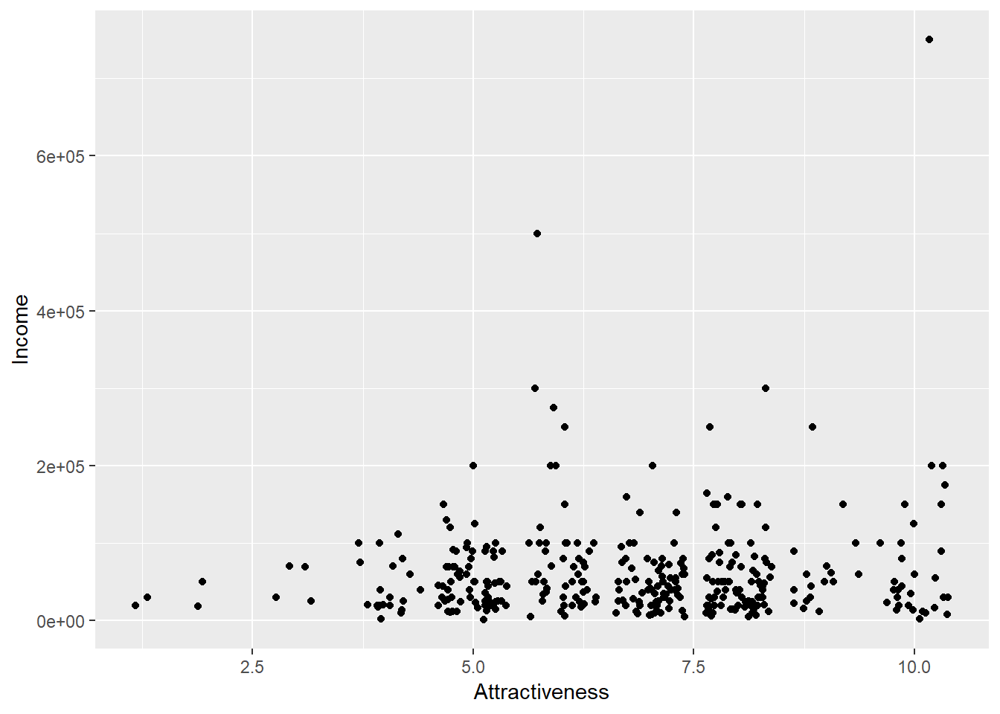
The geom_**** functions all have various default options associated with them. For example, the size and colour of the points in geom_point() or the amount of jitter associated with them in geom_jitter().
QUESTION: Using the help menu for geom_jitter can you modify the following code so that the amount of horizontal jitter is reduced and that there is no vertical jitter applied
?geom_jitterggplot(data = Pulse, aes(x = Attractiveness, y = Income)) +
geom_jitter()4.8 Scales
Income is a notoriously fickle variable. As we can see from the the table below there is a huge range in the values income takes, so when we have plotted Income against Attractiveness, most of our points are bunched up near the bottom.
We can show this by categorising our points in a table such as below;
| Income | Freq |
|---|---|
| $1,000-$9,999 | 13 |
| $10,000-$99,999 | 278 |
| $100,000-$999,999 | 59 |
One solution is to apply a log scale for income. A log scale is when each tick mark of the graph represents an increase in the power.
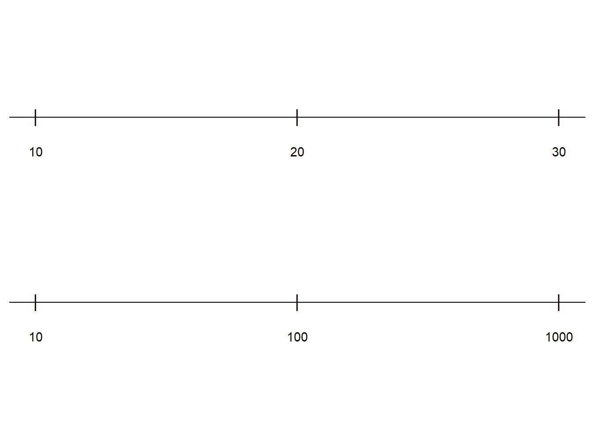
In the above example, the top line is increasing by 10 whereas hde bottom line is increasing by powers of 10. To apply this change of scale to our plot, we add the following code to our plot. scale_y_log10()
ggplot(data = Pulse, aes(x = Attractiveness, y = Income)) +
geom_jitter(width=0.25,height=0)+
scale_y_log10()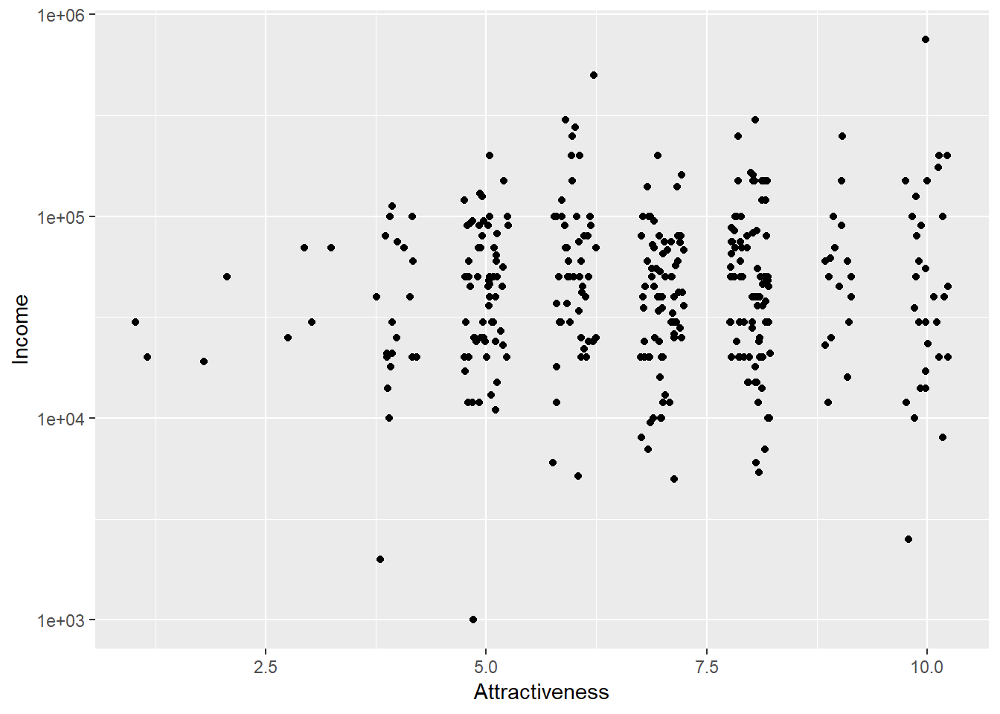
4.9 Layering
ggplot2 graphs can have more than one layer. We may want to produce a line plot with the points shown on top. In ggplots we can simply add more layers to a graph by using +. Layers are added sequentially so the final layer in the code will be plotted over the existing layers. We might want to add a trend line onto our plot to show the increasing trend of income with attractiveness (or the increasing arrogance of wealth?)
ggplot(data = Pulse, aes(x = Attractiveness, y = Income)) +
geom_jitter(width=0.25,height=0)+
scale_y_log10()+
geom_smooth()## `geom_smooth()` using method = 'loess' and formula 'y ~ x'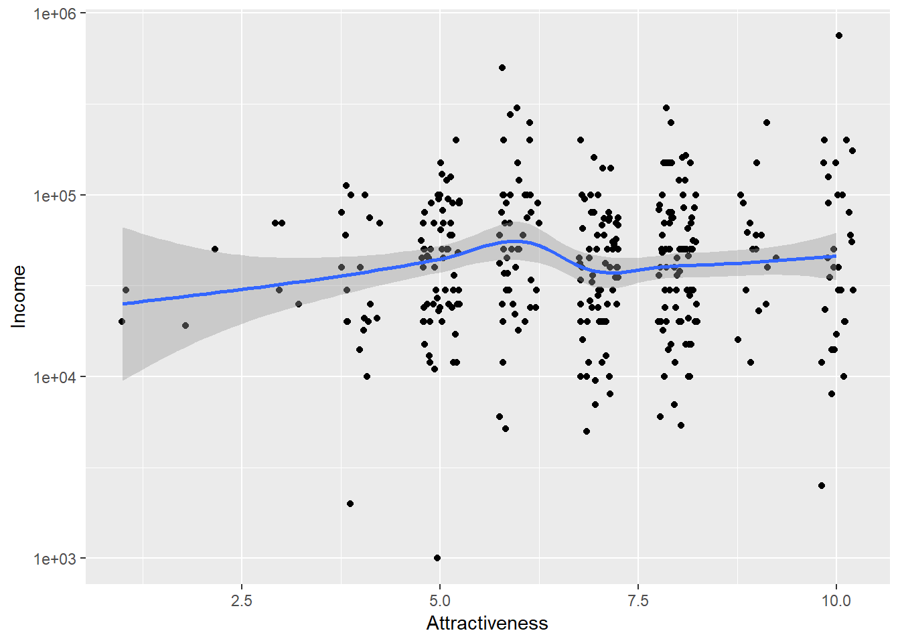
4.10 More geoms
Bar charts are a popular (and horrifically misused way of presenting results). Let’s look at a bar chart of number respondents by political affiliation. We have to think a little bit about how this will be presented - consider how a bar chart works. What goes on the x axis and what goes on the y axis?
ggplot(data = Pulse, aes(x = PoliticalParty))+
geom_bar()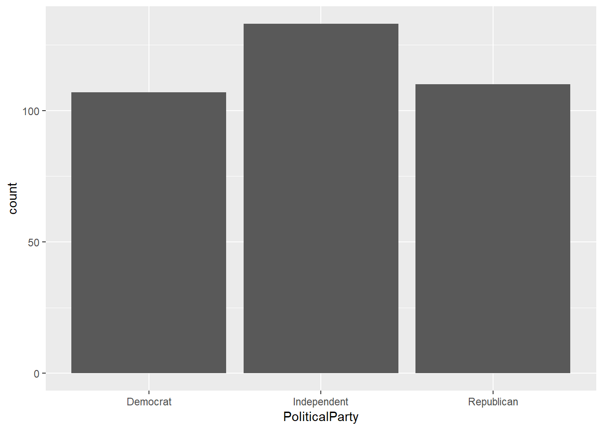
To bring in a second variable then you can map this to the colour or fill aesthetics.
ggplot(data = Pulse, aes(x = PoliticalParty,fill=Gender))+
geom_bar(colour="black")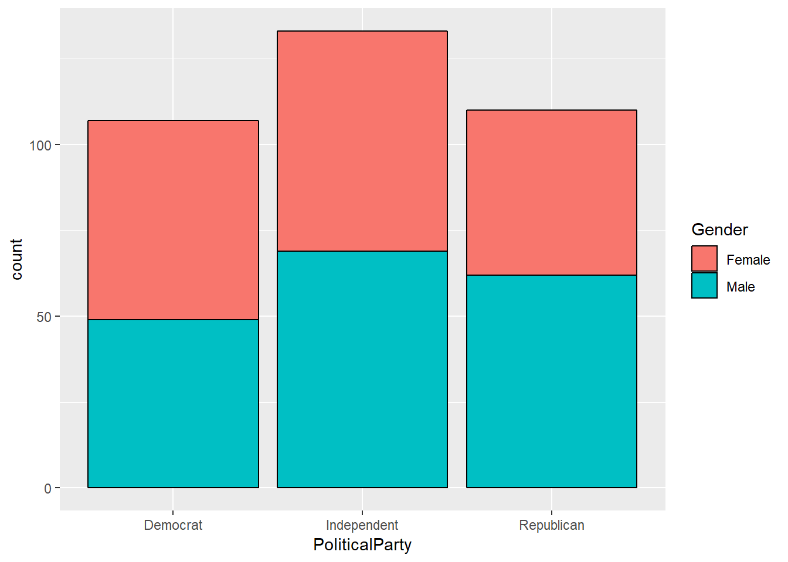
It’s hard to make the direct comparison across our three parties - so we can convert to proportions use position=“fill”
ggplot(data = Pulse, aes(x = PoliticalParty,fill=Gender))+
geom_bar(colour="black",position="fill")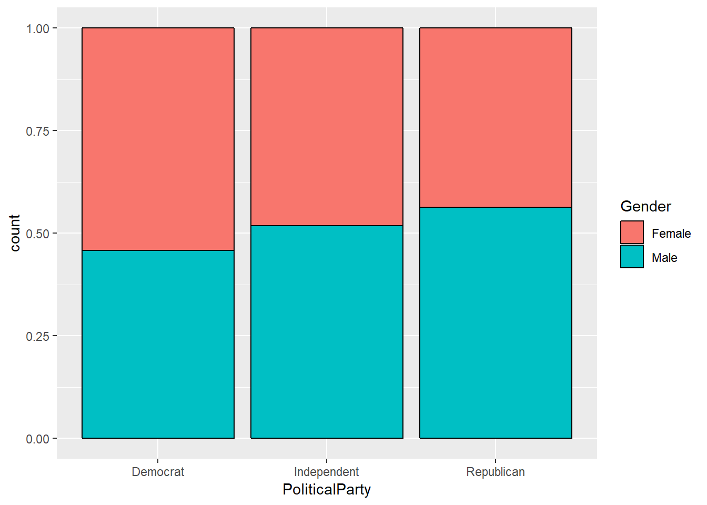
QUESTION: Try removing colour="black" and describe the difference
QUESTION: Make an (informative) bar chart of level of support for Donald Trump by Gender
ggplot(data = Pulse, aes())+
geom_bar()4.11 Comparing attractiveness across gender
How can we compare attractiveness across gender in a better way than colouring the points? There are lots of other geoms which might help here. We could produce a boxplot to summarise the level of attractiveness by gender.
QUESTION: Find the geom function for a boxplot and complete the code below to produce a boxplot of attractiveness by gender
ggplot(data = Pulse, aes(x = ?????, y = ?????))+
geom_?????()The labelling on the y axis is kind of ugly here. Not many people work in base 2.5; but R makes some assumptions on how to label the plots so that it can fit in an ‘optimal’ number of labels. Let’s use scale_y_continuous() to modify this so that all points between 1 and 10 are labelled:
ggplot(data = Pulse, aes(x = ?????, y = ?????))+
geom_?????()+
scale_y_continuous(breaks=1:10)Violin plots are also a really nice way of summarising data in a similar way to boxplots ##Do we want to remove the answer to the earlier questions?
ggplot(data = Pulse, aes(x = Gender, y = Attractiveness))+
geom_violin()+
scale_y_continuous(breaks=1:10)QUESTION: Modify the following code so that the violins are shaded in different colours for men and women. (Hint: You might need to consult the help menu to look for a new aesthetic we haven’t mentioned yet
ggplot(data = Pulse, aes(x = Gender, y = Attractiveness))+
geom_violin()+
scale_y_continuous(breaks=1:10)4.12 Splitting plots using Facets
We’ve seen how to add variables to a plot using aesthetics. Another way, particularly useful for categorical variables, is to split your plot into facets, which are subplots that each display one subset of the data.
ggplot(data = Pulse, aes(x = Gender, y = Attractiveness,fill=Gender))+
geom_violin()+
scale_y_continuous(breaks=1:10) +
facet_wrap(~PoliticalParty)Be careful not to miss the ~ before country. This is used to define a formula which can have something on both sides of ~ in general. It’s used in many R function, and you’ll see this more later in modelling.
4.13 Themes and labels
Themes refers to the non data elements of your plot. ggplot2 has a huge number of theme options that allows you to control almost every aspect of your plot which becomes important when you want to present or publish your graphs.
The labs() function allows us to label any of our variables and create a title. We only need to change options that we are unhappy with.
ggplot(data = Pulse, aes(x = Gender, y = Attractiveness,fill=Gender))+
geom_violin()+
scale_y_continuous(breaks=1:10) +
facet_wrap(~PoliticalParty)+
labs(x="Gender",y = "Perceived Physical Attractivess",colour="Gender (again)",title = "Violin Plots of Physical Attractiveness by Gender and Political Affiliation")theme() allows us to modify the size, font, face of labels and the appearance of many other attributes of the plot which do not depend on the data.
?themeYou will see a a huge number of arguments. You don’t need to learn them all, but you can find out about them on that page. Let’s say we want to edit the text on the x axis, which is the axis.text.x argument. We can modify different properties of the text through the element_text() function. Let’s look at that.
?element_textWe can see it has arguments such as family (for font), colour, size and angle etc.
QUESTION: Investigate the element_text() function to make the text labels on the x axis large and bold
ggplot(data = Pulse, aes(x = Gender, y = Attractiveness,fill=Gender))+
geom_violin()+
scale_y_continuous(breaks=1:10) +
facet_wrap(~PoliticalParty)+
labs(x="Gender",y = "Perceived Physical Attractivess",colour="Gender (again)",title = "Violin Plots of Physical Attractiveness by Gender and Political Affiliation") +
theme(axis.text.x = element_text(????))4.14 Recap Exercises
Fix the error(s) in this code to produce a boxplot of attractiveness by age group
ggplot(data = Pulse, aes(x = agegroup, y = attractiveness))+
geom_boxplot()Fill in the blanks to produce a scatter plot of attractiveness (y axis) by age (x axis)
ggplot(data = Pulse, aes(??????))+
geom_????()Continuing the previous example, modify the scale on the y axis to show every number between 1 and 10 and the x axis to show every 20 years
ggplot(data = Pulse, aes(??????))+
geom_????()Produce boxplots of income by gender, with seperate panels for each age group. Use some colours, set a log axis for income, and add sensible titles and labels
ggplot(data = Pulse, ...Produce a graph to investigate the is a relationship between income and education; and the extent to which this varies by gender.
References
Cards Against Humanity. 2018. “Pulse of the Nation.” https://thepulseofthenation.com/downloads/201806-CAH_PulseOfTheNation_Raw.csv.
Wickham, Hadley, Winston Chang, Lionel Henry, Thomas Lin Pedersen, Kohske Takahashi, Claus Wilke, and Kara Woo. 2019. Ggplot2: Create Elegant Data Visualisations Using the Grammar of Graphics. https://CRAN.R-project.org/package=ggplot2.